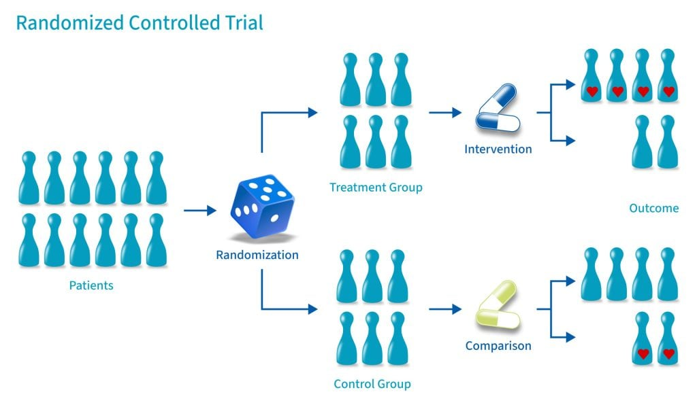

背景
A/B实验目标是实现在线随机对照实验，因此需要满足「随机对照实验」的要求和前提。
然而前支持的「对照组流量共享机制」违背了「随机对照实验」的基本要求。
相关知识
1.什么是随机对照实验随机
对照试验的基本方法是，将研究对象随机分组，对不同组实施不同的干预。
在这种严格的条件下对照效果的不同。在研究对象数量足够的情况下，这种方法可以抵消已知和未知的混杂因素对各组的影响，被公认为是评价干预措施的金标准。 
2.在线随机的一般实现
根据随机实验定义我们要保证：统一群体随机分组，分组后用户属于哪个组稳定。 一般做法：用户标识 -> 拼接salt，产生新字符串 -> 哈希散列为数字 -> 绝对值取余编号（分桶） -> 桶编号范围分组 举例：假设一个实验将用户分100个桶，0 ~ 49号桶用户为对照组，50 ~ 99号桶用户为实验组
共享对照组
1.共享对照流量
设计思路比较朴素：既然对照组为基线，那么切一部分做对照，剩下的只用于实验，都与对照流量对比即可。 示例： 这样做有效利用了流量，但存在重大缺陷：持续迭代下，违背了「随机对照实验」的前提。
2.共享对照缺陷
实验持续迭代，当旧实验结束后，新实验会使用其释放的流量。由于习得性效应（残留效应）影响，此时两人群常常是不同质的。 示例： 上例的实验3结束后，实验4继承了实验3的流量做实验。「共享对照组」和「实验4」还是期望同质的人群么？ 由于释放人群表现 = 原表现 + 实验3效果 —— 除非「实验3」没任何效果才能满足！
3.人群是否同质的谜题
为什么讨论人群是否同质？其实是为了让实验正确决策。 - 随机对照实验下：实验组对照组期望同质，误判都是波动造成，通过统计模型可控。只要标准的统计推断即可保证「误判率」和「检出率」符合预设； - 共享对照实验下：实验组对照组期望同质不能保证，这让实验从科学变成了玄学；
常见问题：实验AA组与对照组不一致，人群是不是不同质，效果可信么？ - 标准随机实验下：AA组与对照组期望同质，流量越大结果波动更小。因此建议流量合并当做对照组，再计算实验结果期望最优解。 - 共享对照实验下：无法解答，AA组和对照组都可能受残留效应影响。
正确的分流方法
1.二次分流实验
按实验分配流量（一个人群），实验内部再二次分配（随机分流）
2.基于二次分流的共享对照
每次实验内部重新随机，做多实验组是合理的，此时对照组流量共享。 有共享流量分配最优解的研究《A Common Control Group - Optimising the Experiment Design to Maximise Sensitivity》
流量饥渴怎么办
共享对照的一个好处是可以用流量变多了（然而弊大于利），去掉此机制后可用流量可能更少，该如何解决？
1.增加流量的本质是什么？
流量越大结果越可信 = 样本越大均值波动越小 = 样本越大均值方差越小 = 样本越大标准误越小
本质上我们是在追求更小的结果波动即更小的标准误。其样本量增加的收益是边际递减的。 \[标准误 = \sqrt{\frac{样本方差}{对照组样本量} + \frac{样本方差}{实验组样本量} } \] 影响标准误的因素：样本方差、样本量
2.增加样本量的收益
通过案例估算： 假设一些用户其样本方差约35000，分配比例1:1， 标准差随样本量变化曲线为： 由上可知：其边际收益递减，大约几十万样本后就不会有特别快的下降。
3.降低样本方差可能是更好的方法
控制变量法、过滤离群点等降噪方法可以降低样本方差，而且常常对一些指标来说方差很容易就可以下降50%以上 样本方差从35000降低到5000收益：
总结
多个实验共享一块对照流量的设计违背了随机对照实验原则，舍本逐末是不划算的。
对于减少结果波动性，我们可以有更高效且更科学的方法。